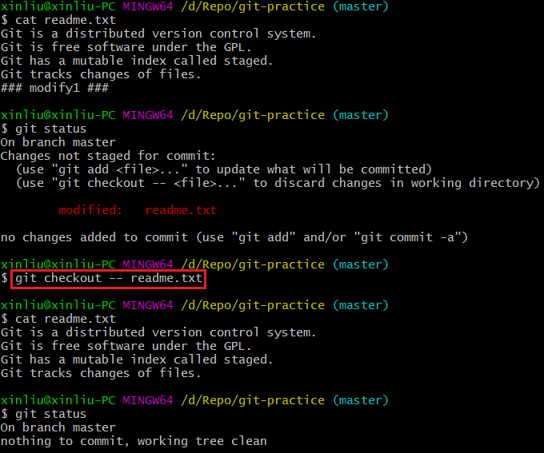
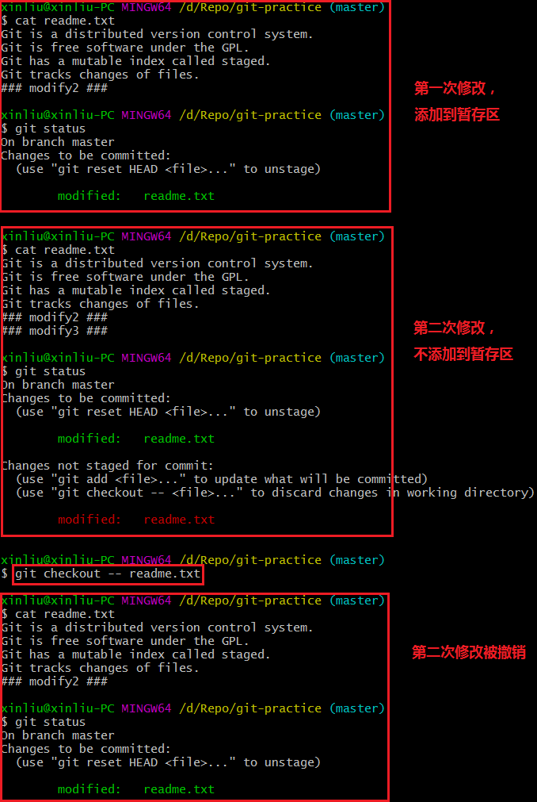
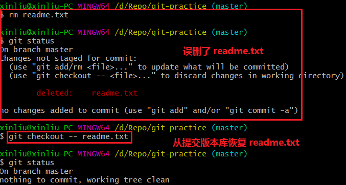
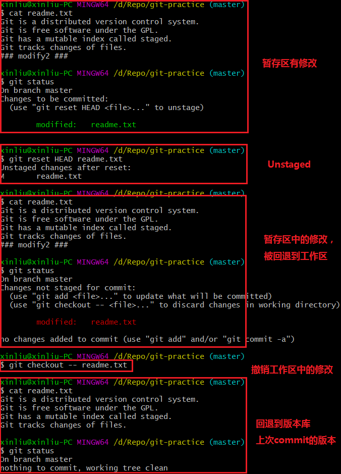

语法：git checkout -- file
有以下两种情况：
①file自修改后还没有被放到暂存区。现在，撤销修改就回到和版本库一模一样的状态；
②file已经添加到暂存区后，又作了修改。现在，撤销修改就回到添加到暂存区后的状态。
总之，就是让这个文件回到最近一次git commit或git add时的状态。
例1：对 readme.txt 修改，但不添加到暂存区，撤销修改。

可见，readme.txt 回到和版本库一模一样的状态。
例2：对 readme.txt 做第一次修改并添加到暂存区，做第二次修改但不添加到暂存区，撤销修改。

可见，readme.txt 回到和暂存区一模一样的状态。
例3：删除 readme.txt 修改，撤销修改。

可见，readme.txt 回到和版本库一模一样的状态。
(2) 撤销暂存区的修改Unstaged，重新放回工作区
语法：git reset HEAD <file>
例4：对 readme.txt 暂存区撤销

可见，暂存区 readme.txt 的修改被回退到工作区。如果要撤销工作区中的修改，参照(1)。
(3) 撤销版本库中的修改，该版本之后的提交都被丢弃语法：git reset --hard ，见常用命令(7)。
注意，如果已经提交了不合适的修改到远程版本库，想要撤销本次提交。这时，要慎重使用该命令，否则别人在该版本后的提交，也会被一同撤销。